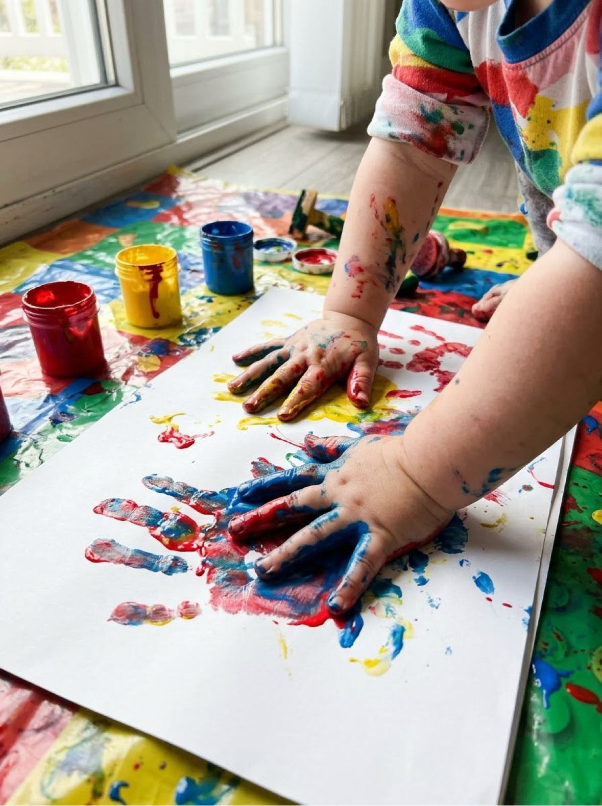
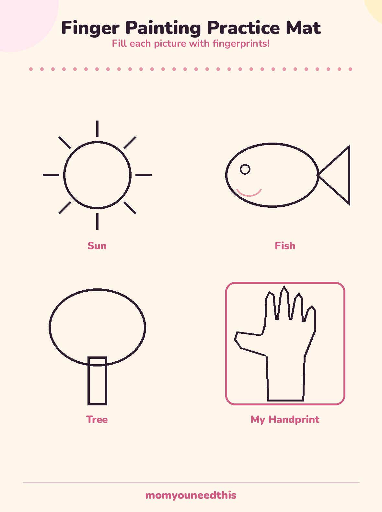

Finger Painting Taste-Safe Recipes & Ideas from Babies to Preschoolers
Finger painting is usually a child's first art — and with the right paint, it can start before their first birthday. This page has two taste-safe recipes with real ratios, the setup that keeps the mess on the tray, and activities matched to each stage: bag painting for babies, free painting for toddlers, and handprint art for preschoolers.
Last updated: October 21, 2026

Quick Answer
For babies and toddlers, make taste-safe finger paint: stir food colouring into plain yogurt for the two-minute version, or cook the cornstarch recipe below for a smoother, gel-like paint. Both use kitchen ingredients, both still need constant supervision — taste-safe is not the same as food. Tape the paper down, paint on a tray, and start babies with paint sealed in a bag so nothing reaches their mouth at all.
At a Glance
- Ages: 6 months+ (bag method, supervised) to preschoolers
- What you get: 2 taste-safe recipes, setup & cleanup system, activities by stage, free practice mat
- Safety: kitchen-ingredient paints, constant supervision, leftovers thrown away
- Cost: recipes and printable are free — no signup, no email
🌱 Why Finger Painting Comes First
Before a child can hold a brush, they can paint with their hands — and what looks like pure mess is doing several quiet jobs at once. Pushing paint around builds the hand strength and finger control that later hold pencils. Mixing colours with your own fingers teaches cause and effect more directly than any explanation: blue plus yellow, spread by your own hand, turns green. And because there is no tool to manage and no picture to get wrong, finger painting is the one art activity where a one-year-old and a four-year-old are doing exactly the same thing, at exactly their own level.
None of that requires special equipment or a curriculum. It requires paint that is safe for the stage your child is at, paper that stays put, and an adult who has set things up so that 'yes, paint there' is the answer to almost everything the child tries. The rest of this page is that setup.
🥣 Two Taste-Safe Finger Paint Recipes
Both recipes are made from kitchen ingredients, and both come with the same label: taste-safe, not food. A licked finger is not an emergency with either paint — and neither paint should be served by the spoonful, left within reach unsupervised, or saved once little hands have been in it.
Recipe 1 — Yogurt paint (2 minutes, no cooking). You need 1 cup of plain yogurt and food colouring. Divide the yogurt between the cups of a muffin tin or small bowls, and stir a few drops of a different colour into each. That is the whole recipe. It paints smoothly, washes off with water, and smells fine. Its limits: it is runnier than bought paint, it must be made fresh, and everything left at the end of the session goes in the bin, not back in the fridge.
Recipe 2 — Cooked cornstarch paint (10 minutes, smoother). Whisk ½ cup of cornstarch into 2 cups of cold water in a saucepan until there are no lumps. Heat gently over a low heat, stirring constantly, until the mixture thickens and turns glossy and translucent — about 3 to 5 minutes of real thickening. Take it off the heat and let it cool completely (it thickens more as it cools). Divide into jars or muffin cups and stir in food colouring. The texture is a smooth, jelly-like paint that stays where small fingers put it. An adult makes this one; the child arrives for the painting part.
Colouring tips. Gel food colouring gives stronger colour with fewer drops. Paint always looks darker in the pot than on the paper. And red colouring is the worst stainer of the set — save it for days when the outfit does not matter.
🧺 The Setup & Cleanup System
Five minutes of setup buys you a calm session and a two-minute cleanup:
- Contain the zone. Paint on a tray, a rimmed baking sheet, or a washable mat — one clear boundary the paint lives inside. For babies in highchairs, the tray is the canvas holder.
- Tape the paper down. A loop of painter's tape on each corner. Sliding paper frustrates small painters more than anything else in the session.
- Small amounts, sturdy cups. A tablespoon or two of each colour in a muffin tin is plenty. Small amounts mean small spills, and refills feel like a fresh event.
- Dress for it. One old shirt or a smock, sleeves pushed up, and bare feet if you can — painted socks track paint through houses.
- Stage the cleanup before you start. A bowl of warm water and a towel beside the painter, wipes for hands, and a clear path to the sink. Hands get carried to the sink — little painted hands should never make the journey under their own power.
👶 Finger Painting by Stage
Babies (around 6–12 months): bag painting. Put two or three spoonfuls of paint — or blobs of two colours — inside a sturdy zip-top bag, squeeze the air out, seal it, and tape it flat to the highchair tray or the floor for tummy time. Babies push, pat and smear the paint through the plastic: all the colour-mixing, none of it in anyone's mouth, and the artwork is genuinely pretty. Tape the edges well; determined babies peel.
Toddlers (1–3 years): free painting. Paper taped to the tray or table, two or three colours, and no instructions beyond keeping paint on the paper. Expect whole-arm painting, colour mixing into one glorious brown, and a finished work in about four minutes — have a second sheet ready. Handprint and footprint lifts partway through give you the keepsake version before the swirling starts.
Preschoolers (3–5 years): fingerprint art. Now fingers become tools with a job: fill a picture with fingerprints, dot caterpillars along a line, print petals around a flower centre, make a handprint tree with fingertip leaves. The free practice mat below is built for exactly this stage — big simple outlines that turn a page of fingerprints into a sun, a fish, a tree, and a handprint to keep.
🖨️ The Free Finger Painting Practice Mat
Four big, simple outlines sized for small fingers: a sun, a fish, a tree, and a framed space for a painted handprint. Print it on card stock if you can — finger painting is wet work — tape the corners down, and let your preschooler fill each picture with fingerprints, one dab at a time. The handprint frame turns the same sheet into a keepsake: date it on the back and it earns its place in the memory box.

👆 Download Your Free Practice Mat
Sun, fish, tree and handprint outlines sized for little fingers
⬇️ Download Free Practice Mat 🖨️ Print🎁 Free printable for toddlers and preschoolers
⚠️ Safety Notes, Plainly
Supervision is the whole safety system: an adult within arm's reach for the entire session, every time. Taste-safe recipes lower the stakes of the inevitable licked finger; they do not make paint a snack, and a child who is determinedly eating paint should be moved to the bag method or finished for the day. Check skin afterwards — if paint leaves a rash or irritation, wash it off and skip that recipe next time. Keep paint away from eyes, wash hands when you are done, and throw away every leftover: paint that has hosted a toddler session is not stored, full stop.
🎨 More Fun for Moms & Kids
🎨 Painting Ideas Hub
Every painting project on the site, from baby bag painting to family pottery. Browse all painting ideas.
🦋 Easy Face Painting Ideas
When they graduate from painting paper to painting themselves — safely, with cosmetic paint. See the designs.
🌈 Watercolour Painting Ideas
The next step up: brushes, washes and simple projects for kids 5+. Try watercolour.
🏺 Pottery Painting Ideas
Family craft-time projects with fifteen designs and a free planner. Plan a pottery project.
🧩 Learning Activities
More toddler and preschool activities — letters, numbers, shapes and sensory play. Browse activities.
📚 Free Resources
All of the site's free printables and tools in one place. Browse free resources.
❓ Frequently Asked Questions
What age can babies start finger painting?
Babies who can sit with support and do tummy time — often around 6 months — can start with paint sealed inside a zip-top bag taped flat to the tray or floor, which gives them the squishing and colour-mixing with zero paint contact. Free finger painting, with hands in the paint, suits babies and toddlers who can sit steadily and are watched closely; expect hands to go to mouths, which is exactly why the taste-safe recipes on this page exist.
Is edible finger paint actually safe to eat?
The recipes on this page are made from ordinary kitchen ingredients — yogurt, cornstarch, food colouring — so a licked finger is not a poisoning emergency. But they are paints, not food: they are not balanced snacks, food colouring is not meant to be eaten by the spoonful, and paint that has been on a table and hands should not be treated as a meal. Keep portions small, supervise constantly, redirect hands-to-mouth painters to the bag method, and throw leftover paint away rather than saving it for another day.
How long does homemade finger paint keep?
The yogurt paint should be treated like yogurt: make it fresh, keep it in the fridge, and throw away whatever is left at the end of the session. The cooked cornstarch paint keeps a little longer — a few days in a sealed jar in the fridge — and should be thrown out if it smells off, separates, or grows anything. When in doubt, make a half batch; both recipes take minutes.
Does finger paint stain clothes and skin?
Food colouring can stain — it is the main culprit in both recipes. Paint in old clothes or a paint shirt, cover the work surface, and expect hands to stay faintly coloured until the next bath or two; it washes off skin gradually and is harmless. If staining matters (a party, a photo day), commercial washable finger paints are formulated to rinse out more easily, and they are the better tool for that day.
What paper works best for finger painting?
Thick paper that can take a soaking: finger painting paper is made for this and has a slightly glossy surface the paint glides on, but card stock, the back of a cereal box, or a sheet of freezer paper (shiny side up) all work well. Tape the corners down — sliding paper is the number one source of toddler painting frustration — and for babies, a tray with raised edges keeps the artwork and the paint in one place.